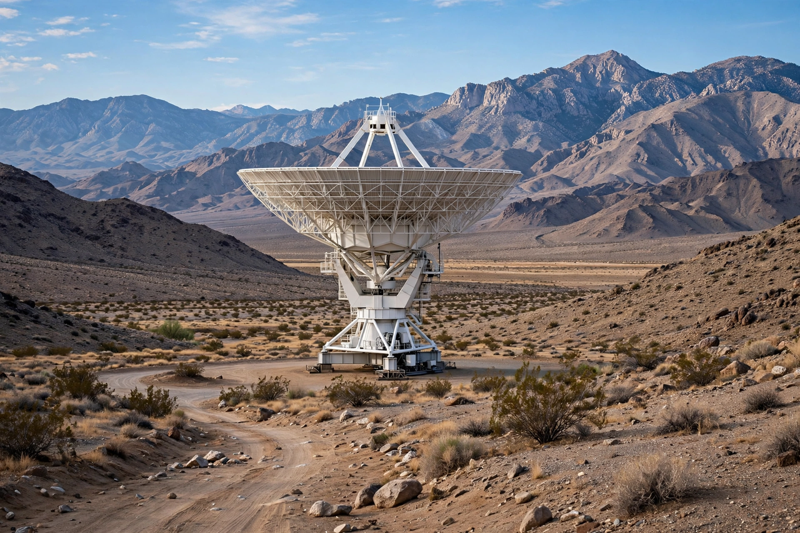

NASA Deep Space Network
From Wikipedia, the free encyclopedia
| NASA Deep Space Network | |
|---|---|
| Operator | NASA / JPL |
| Sites | Goldstone (California), Madrid (Spain), Canberra (Australia) |
| Largest antennas | 70 m dishes |
| Established | 1963 (origins 1958) |

Goldstone's 70-metre antenna.The NASA Deep Space Network (DSN) is the world's largest and most sensitive scientific telecommunications system: three complexes of giant dish antennas spaced around the globe — Goldstone in California's Mojave Desert, Madrid in Spain, and Canberra in Australia — so that, as Earth turns, a spacecraft anywhere in deep space always has a station in view. It is operated by JPL for NASA.
Every interplanetary mission in this crawl — from Mariner to the Voyagers, now more than 15 billion kilometres away and whispering at a power of 10⁻¹⁶ watts by arrival — speaks through the DSN's 34- and 70-metre dishes. The network also serves partner agencies, performs radar astronomy of asteroids (a Planetary defense asset), and is chronically oversubscribed, its schedule a diplomatic instrument among missions.
Strain
With dozens of missions and only three sites, DSN time is rationed; the Artemis era and the Mars fleet have intensified calls for new antennas and optical (laser) communications, demonstrated in 2023–24 by the DSOC experiment on the Psyche mission. Madrid's DSS-63 and Canberra's DSS-43 — the latter the only dish able to talk to Voyager 2 — are infrastructure as irreplaceable as the spacecraft themselves.
See also
Jet Propulsion Laboratory · Voyager program · Planetary defense